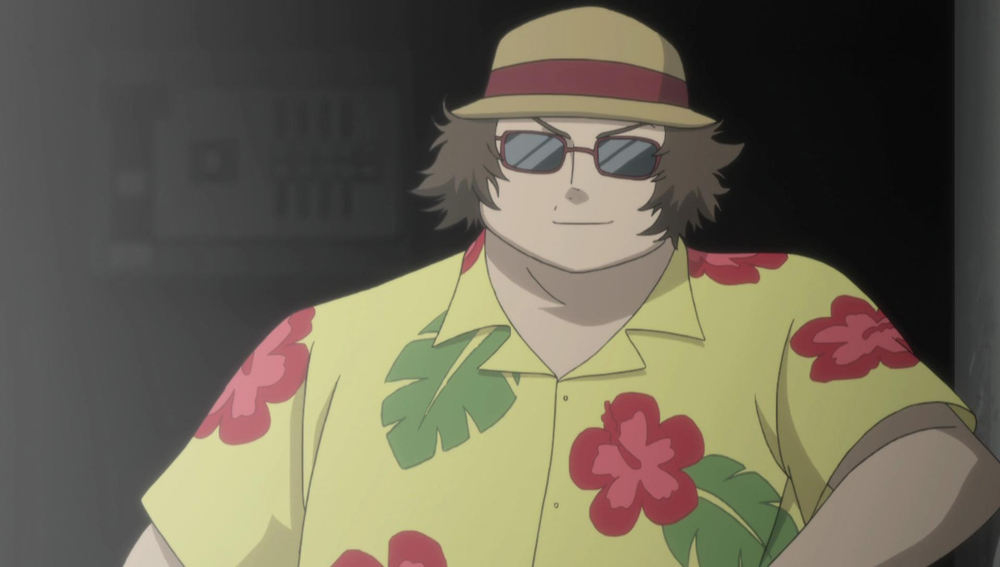
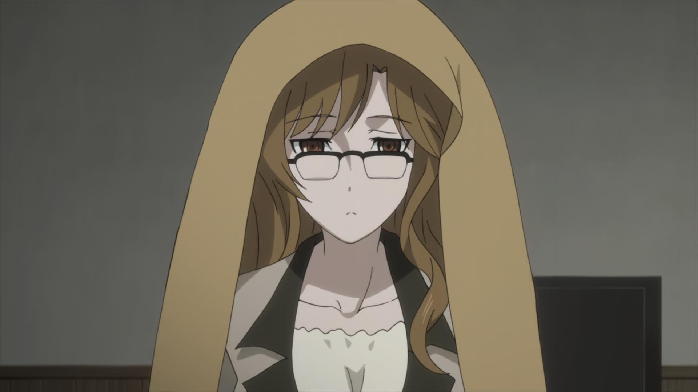
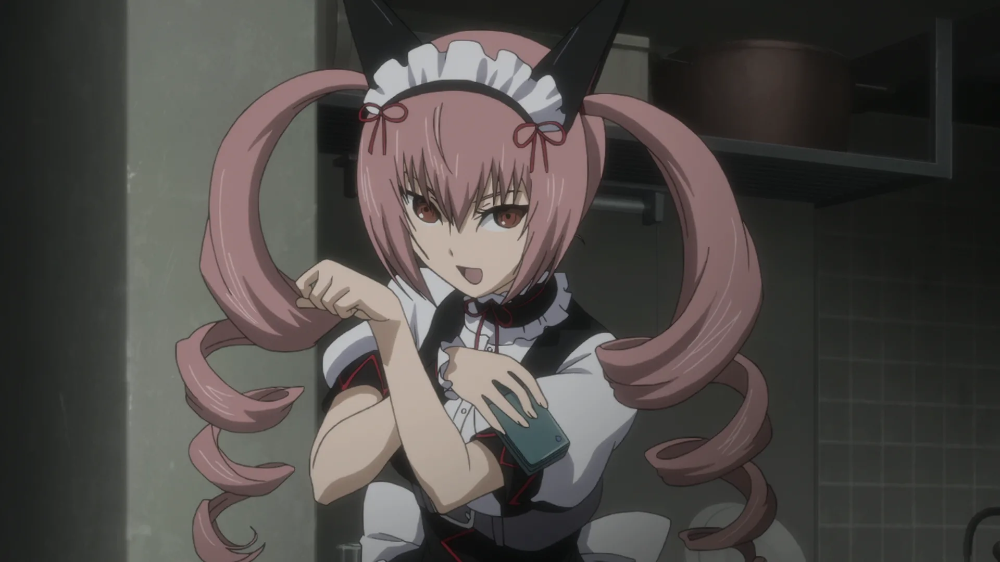

Окабе Ринтаро
- Член лаборатории #001.
- Истинное имя Хооин Кёма.
- Основатель лаборатории.

Шиина Маюри
- Член лаборатории #002.
- Позывной: "Маюши"
- Спонсор

Хашида Итару
- Член лаборатории #003.
- Позывной: "Супер-Хака".
- Технический специалист

Макисе Курису
- Член лаборатории #004.
- Позывной: "Celeb-17".
- Ассистентка

Кирю Моэка
- Член лаборатории #005.
- Позывной: "Shining finger"
- Завербованный член СЕРНа.

Урашибара Рука
- Член лаборатории #006.
- Позывной: "Рукако"
- Отлично готовит

Акиха Румихо
- Член лаборатории #007.
- Позывной: "Фейрис"
- Спонсор

Амане Сузуха
- Член лаборатории #008.
- Позывной: "Сузу"
- Телохранитель
Хотите стать сотрудником? Тогда заполните форму. Также пройдите опрос, чтобы мы лучше вас узнали.